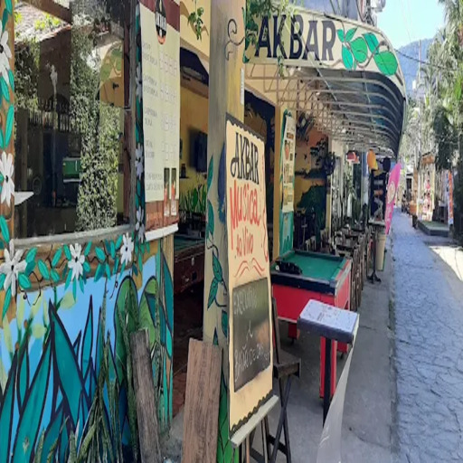
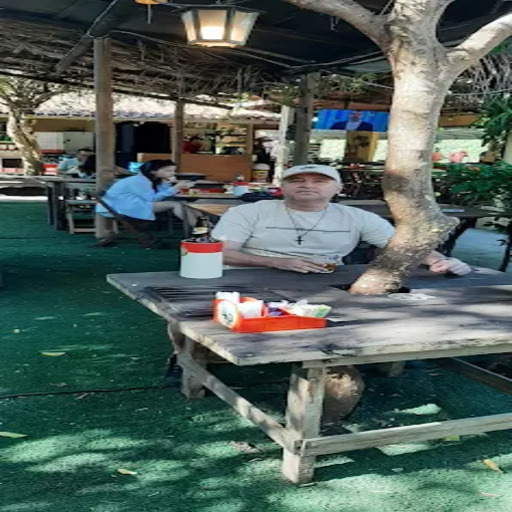
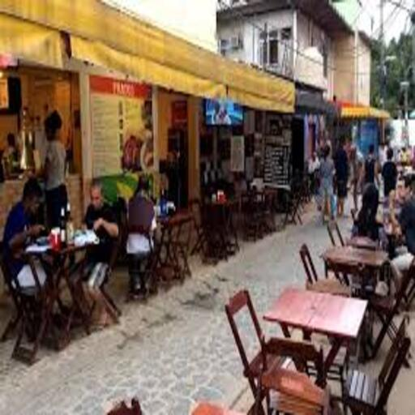
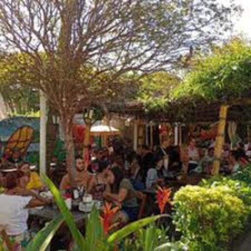
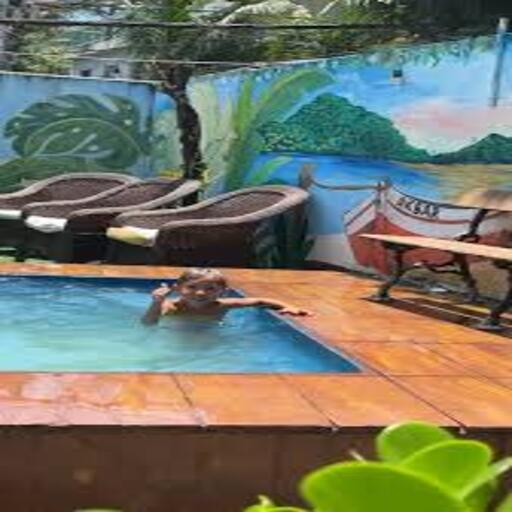
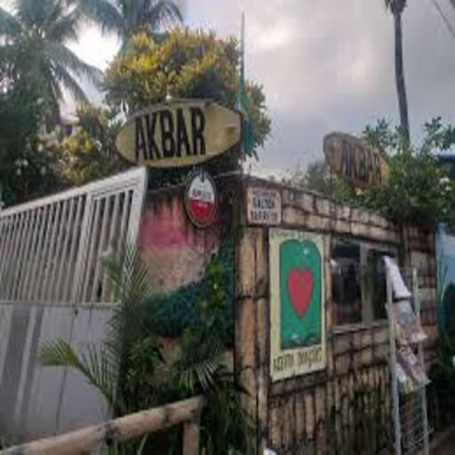
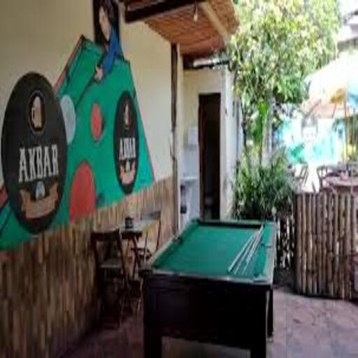
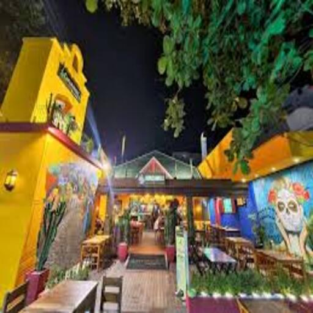

AK Bar
Um clássico da Ilha da Gigóia para quem não abre mão de um bom petisco e o visual do pôr do sol.

Dica do Capi:








Sobre o Bar
O AK Bar é sinônimo de tradição e hospitalidade. Com uma das vistas mais privilegiadas para os canais da Ilha da Gigóia, o bar oferece o cenário perfeito para relaxar e curtir o "lifestyle" insular.
É o destino certo para quem busca aquela cerveja estupidamente gelada acompanhada de petiscos que trazem o verdadeiro sabor do Rio. O vai e vem dos barcos e o reflexo do sol na água completam a experiência.
Especialidades
- ✓ Petiscos de Boteco
- ✓ Cerveja no Ponto
- ✓ Atendimento Amigável
- ✓ Vista Panorâmica
Destaque
Famoso pelo pôr do sol inesquecível à beira do canal.
Ideal Para
Happy hour com amigos e momentos relaxantes.